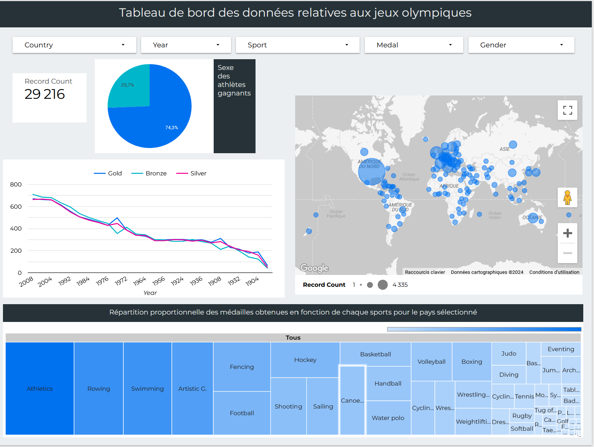
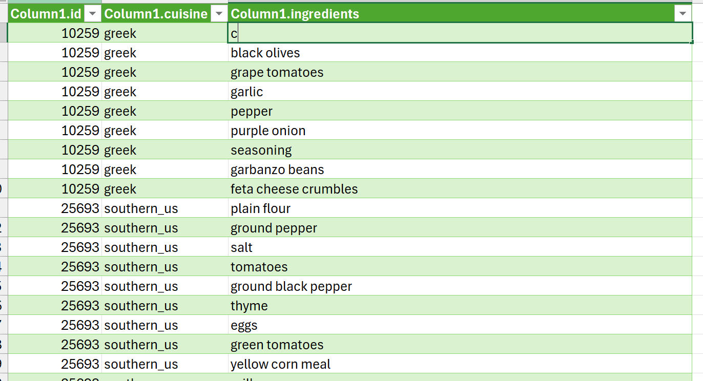
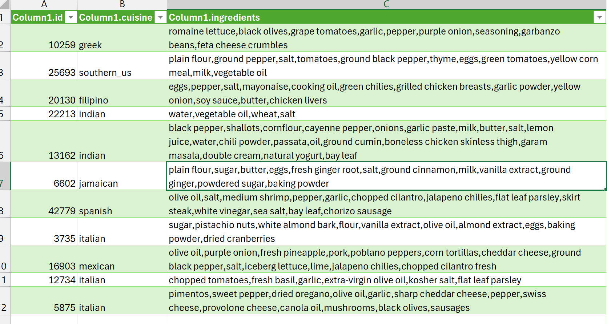
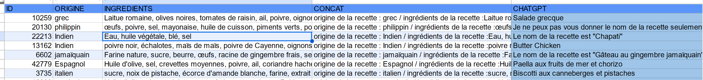
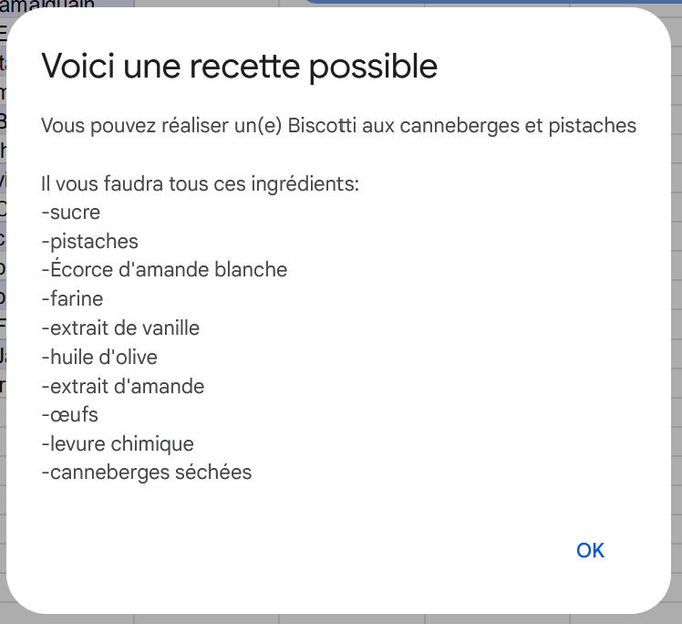
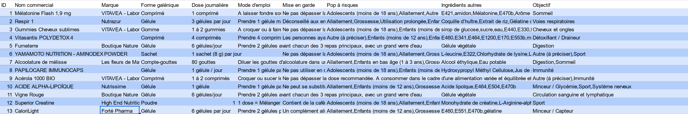
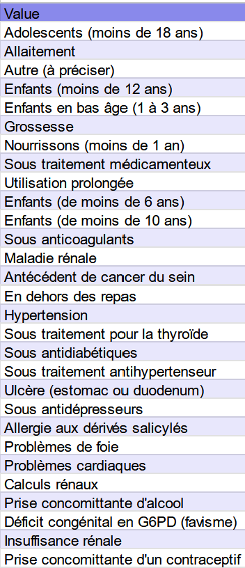
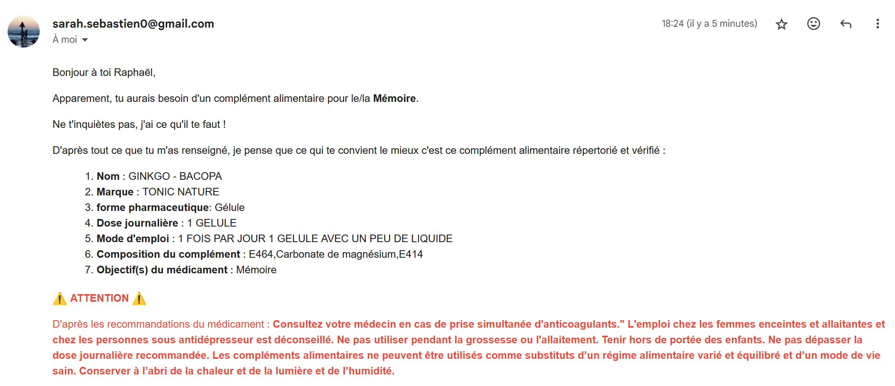
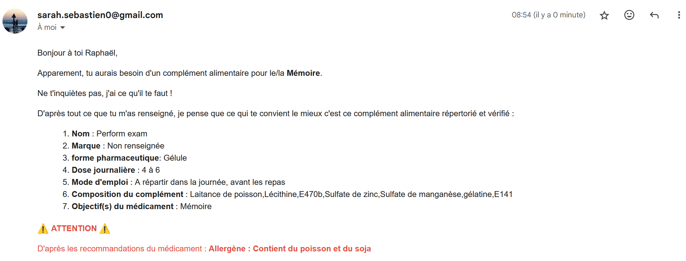

POK 3: My Google Health Assistant
- POK
- 2023-2024
- temps 3
- Google Apps Script
- Google Sheet
- Sebastien Sarah
Ce MON traitera de l'apprentissage de Google Sheet et d'Apps Script et de leur application au travers d'un mini projet qui impliquera, une gestion d'une BDD, des liens entre les différentes applications Google (Forms, Sheets) et un traitement des données.
Niveau débutant
Prérequis : Aucun
Sommaire
- Introduction
- Backlog
- Recherches des ressources
- Focus sur Google Sheet
- Focus sur Google Apps Scripts
- Vers le sprint 2
- Une courte présentation de My Google Health Assistant
- Construction de la base de données Google Sheet du projet
- Création du Google Form
- Rédaction du script avec Google Apps Script
- Résultat final
- Retour sur le sprint 2 et retour d'expérience
Introduction
J'ai déjà utilisé VBA à maintes reprises au cours de mon alternance et dans mon premier POK. Mais j'ai remarqué que si VBA était, jusque là, l'incontournable outil quand il s'agissait de créer des macros, le nom d'"Apps Script" commençait à s'entendre de plus en plus souvent. Alors je me suis dit, pourquoi ne pas découvrir un peu de quoi il en retourne ?? Et puis comme ça je pourrai comparer les 2 langages, et me faire mon propre avis.
Backlog
Voici mon backlog pour le sprint 1 :
| Intitulé | Temps estimé |
|---|---|
| - Lecture des différents MON sur le sujet | 45 mins |
| - Recherches et ajouts de ressources personnelles sur le sujet | 30 mins |
| - Prise en main de Google Sheet à l'aide des ressources listées | 30mins |
| - Application à un sujet de traitement de BDD | 2h |
| - Prise en main de Google Apps Script à l'aide des ressources listées | 1h30 |
| - Entraînement à l'application de ces connaissances sur un sujet | 3h |
| - Entraînement à la connexion d'Apps Scripts aux autres applications Google | 1h30 |
| - Définition du backlog pour le mini projet imaginé | 15 mins |
Recherches des ressources
En ayant épluché tout le site de Do-It sur le sujet, voici un petit guide sur ce qui a déjà été traité et comment :
| Numéro | Nom | Résumé |
|---|---|---|
| 1 | Un peu d'Excel/Google Sheets pour mourir moins idiot de Henri Taing |
- Des explications sur l'utilisation de notions de Google Sheet (vue filtrée, tableau croisé dynamique, mise en forme conditionnelle, quelques fonctions...) - Recommandation pour Sheet et Apps Scripts des tutos de ce site qui lui ont mis "des paillettes dans les yeux" |
| 2 | Google Apps Script de Savinien Laeuffer |
- utilise la doc fournie par Google sur son service - aborde les thèmes de Toast, d'envoi de mails, de déclencheurs, des scripts HTML, de menus personnalisés - REMARQUE :c'est assez pratique car il a mis dans son MON tous ses codes, mais on a peu d'aperçu sur le rendu de ce qu'il a fait |
| 3 | Temps 1 - MON - Google Apps Script de Kasimir Romer |
- réalisation d'une to do list sur google sheet mise à jour automatiquement par action de l'utilisateur - cite en ressource cette vidéo youtube, de la documentation Google et de la documentation JavaScript |
| 4 | Google Apps Script de Antoine Varnerot |
- conseille vivement les tutos de Google et les tutos de cette playlist Youtube - pour s’entraîner, il propose d'utiliser ce site qui propose des idées de mini-projets à faire avec Google Apps Script - Détails sur sa proposition pour le projet "Clean up data in a spreadsheet" |
| 5 | Google Apps Script de Jean-Baptiste Durand |
- c'est le seul à donner quelques explications à Google App Scripts (qu'est ce que c'est, les principales fonctionnalités, etc..) - répertorie plusieurs formules basiques utiles et évoque la notion de déclencheurs temporels, qu'il n'a pas eu le temps de trop aborder mais il conseille la documentation de Google sur le sujet - réalise ensuite un tricount sur Sheet avec Apps Script (BEMOL: son lien vers le code source de son travail ne marche pas et on a accès à son Sheet qu'en lecture seule, donc pas possible d'accéder à sa macro...) |
| 6 | MON 1: Google apps script de Ossama Abdane |
- a focalisé son MON sur les triggers : explications et quelques exemples de triggers classiques - explique en détails les déclencheurs temporels et l'applique à une fonction qui envoie un mail tous les matins pour lui rappeler d'aller signer la feuille de présence - utilise les mêmes ressources que dans les MON précédents, et y inclue ce site pour les triggers temporels |
| 7 | MON 2.1: Google Apps Script : Rappel anniversaire par Ossama Abdane |
-application des connaissances de son MON précédent sur la réalisation d'un outil qui prévient automatiquement par mail de la date d'anniversaire d'une personne dans une liste stockée sur Sheet |
| 8 | MON 2 : Google Apps Script de Thomas Pont |
- réalisation d'un outil pour "automatiser l'envoi de mails personnalisés" - donne des conseils sur la gestion des dates dans Sheet - explique la gestion de texte HTML avec Apps Script |
Focus sur Google Sheet
Pour m'entrainer, je me suis appuyée sur ce fichier csv envoyé gracieusement par un gentil collègue de IAM.
Ce fichier traite de certaines caractéristiques de chaque vainqueur des JO (l'athlète, son sexe, sa nationalité, la couleur de sa médaille, la catégorie dans laquelle il a gagné, etc...).
Ressources
Je me suis dit que ça ferait une base parfaite pour m'entraîner sur Sheet. Pour cela j'ai étudié et appliqué les différentes parties du cours sur Google Sheet de ce site qu'Henri avait conseillé, j'ai aussi utilisé cette page de Google qui répertoriait un grand nombre de formules pour Sheet, et qui m'a été, ma foi, très utile.
Entrainement sur Sheet
Vous retrouverez ici un lien vers le Sheet que j'ai créé.
- onglet "olympics" : base de données brut avec mise en forme conditionnelle de la couleur de chaque cellule de la colonne "Medal", en fonction de la couleur de la médaille correspondante.
- onglet "test formules" : test de plusieurs formules pour mettre en valeur certaines données.
- onglet "graphique" : récupération des données de tous les pays (via la formule UNIQUE()) pour venir chercher le nombre de médailles gagnées, de chaque couleur. Puis mise en forme de ces données sous la forme d'un graphique adapté
- onglet "Tableau croisé dynamique" : création d'un tableau croisé dynamique avec la gestion des segments.
Finalement, contente d'en être arrivée jusque là, j'ai voulu continuer, en essayant d'appliquer mon MON 2.1, en créant un tableau de bord sur Sheet. Mais là... je me suis heurtée à un mur : dès que j'ai commencé à avoir plusieurs graphiques et à manipuler les données, Sheet ne parvenait plus à actualiser correctement et le temps de réponse devenait parfois inquiétant. J'ai alors compris que Sheet n'était pas DU TOUT fait pour ça. Mais je suis restée sur ma faim. Alors j'ai fait mes petites recherches et j'ai découvert Looker Studio, le Power BI de Google.
A la découverte de Looker Studio
N'ayant jamais utilisé Power BI, je partais ici avec un oeil innocent. Pour savoir un peu dans quelle direction partir en ouvrant le logiciel, j'ai regardé cette vidéo Youtube qui expliquait très bien comment prendre en main l'outil. Il est assez intuitif et simple à utiliser alors 12mins47 étaient largement suffisantes pour savoir comment procéder. Je ne suis pas extrêmement rentrée dans les détails des options qu'offraient Looker Studio, car ce n'était pas le but ici, mais il a l'air assez complet (ex: possibilité de créer des champs personnalisés calculés très pointus).
Alors finalement, après 1h30 de dur labeur, je vous présente mon tableau de bord, avec lequel vous pouvez jouer ici
Focus sur Google Apps Scripts
Ressources
Après avoir lu autant d’encensements des vidéos youtube de cette playlist youtube, j'ai regardé toutes les vidéos. Et je dois dire qu'elle méritait les éloges, les vidéos étaient très complètes et très bien expliquées. Je la recommande, moi aussi ! Mais je la complèterai quand même avec les explications de sheets-pratique.com qui abordent des points cruciaux qui n'apparaissent pas dans les vidéos (ex : comment créer un bouton sur Sheet et y affecter une macro, ou comment enregistrer un script directement depuis Sheet,...)
Entraînement sur Apps Script
Cependant, quand j'ai voulu passer à un exercice applicatif, ça a été compliqué... J'ai voulu utilisé ce site, conseillé par Antoine qui répertorie des applications simples pour débutant à refaire pour se familiariser avec le langage. Mais j'ai été déçue du peu de quantité d'exercices qu'il y avait, et du fait que les exercices ne soient pas guidés dans leur réalisation, mais seule la correction est indiquée.
J'ai donc voulu créer mon propre entraînement, pour cela il me fallait trouver l'inspiration. Je voulais trouver le moyen de parvenir à interagir avec l'utilisateur:
J'ai cherché sur data.world des BDD qui pourraient être intéressantes. J'en ai trouvées plusieurs qui traitaient de la composition de plusieurs aliments. J'aimais beaucoup le thème mais je les trouvais trop dures à exploiter. En cherchant plus globalement sur internet, j'ai trouvé celle-ci sur un site appelé Kaggle. Cette BDD contenait une liste de recettes, la nationalité de la recette et les ingrédients. J'ai tout de suite eu l'idée de faire un script qui permettrait de proposer à l'utilisateur des recettes en fonction des ingrédients et des types de cuisine qu'il aurait sélectionnés sur le sheet. Un peu comme l'option "Frigo" de l'application de Marmiton, ou d'autres applications de Frigos intelligents.
Mais la réalisation de mon idée affichait déjà quelques contraintes:
- BEMOL n°1 : les fichiers à télécharger étaient sous le format JSON
- BEMOL n°2 : il n'y avait aucun nom de recettes dans le fichier, juste des ID
Il en fallait plus pour m'arrêter.
Résolution des problématiques
BEMOL n°1 :
Je savais qu'il y avait la possibilité d'utiliser Power Query pour importer des fichiers JSON. J'ai juste regardé cette vidéo qui expliquait comment importer et parsemer des données d'un fichier JSON sur Excel. J'ai fait en sorte de parsemer les ingrédients de 2 façons, pour pouvoir plus facilement traiter les données par la suite.
| étendre sur plusieurs lignes | extraire les valeurs |
|---|---|
|  |  |
| Permet d'avoir un ingrédient par ligne | Permet d'avoir tous les ingrédients dans une même cellule |
BEMOL n°2 :
L'outil idéal pour trouver le nom d'une recette facilement à partir de l'origine de la recette et de ses ingrédients était évident : ChatGPT. Mais lui poser la question pour chaque ligne était trop fastidieux. Après quelques recherches, j'ai vu qu'il était possible de connecter facilement l'API de ChatGPT à Sheet. Processus très bien expliqué dans cette vidéo
Ni une ni deux, je m'y atèle.
- première étape : traduire tous les textes (origine et ingrédients) en français. Facile avec la formule de Google Translate. (Mais qui laisse à désirer parfois quand même)
=GOOGLETRANSLATE(B2;"en";"fr")
- deuxième étape : concaténer les informations de l'origine de la recette et des ingrédients pour faciliter la requête ChatGPT
="origine de la recette : "&C2&" / ingrédients de la recette :"&E2
-troisème étape: faire la requête ChatGPT
=GPT("peux tu me donner le nom de la recette seulement dont ";F2)
On obtient alors en résultat : 
REMARQUES
- chaque requête à l'API est payante. Le prix dépend du type de la requête. Ce genre de requête n'est pas très cher. Mais comme mes crédits gratuits n'étaient pas illimités, j'ai choisi de restreindre à 62 recettes.
- les requêtes sont re-effectuées à chaque ouverture du Sheet. J'ai donc désactivé le mode "dépense". Il se peut qu'à l'ouverture, les cellules de la colonne ChatGPT indiquent #ERROR!
Mise en forme du sheet
Après adaptation des données obtenues (ex: suppression des lignes que ChatGPT ne trouvait pas). J'ai tout mis proprement dans un onglet BDD recettes.
J'ai créé un onglet CHOIX où je suis venue placer la liste de tous les ingrédients disponibles (obtenue en réalisant une fonction UNIQUE sur la colonne "ingrédients" du fichier généré avec l'étape "étendre sur plusieurs ligne" d'Excel, expliqué plus haut) et de tous les types de cuisine disponibles (même process).
On rajoute ensuite des case à cocher (Menu Insertion>Case à cocher). Et hop, le tour est joué !
Réalisation du script
Besoin de 2 fonctions :
- une fonction contientElement qui va venir tester si un élément est dans un tableau (car le cas se présente plusieurs fois dans la fonction principale)
contientElement
contientElement
function contientElement(array, element) {
return array.includes(element); // Retourne true si l'élément est trouvé dans le tableau
}- une fonction getRecipe qui récupère les choix de l'utilisateur et les recherche dans la BDD de recettes pour lui trouver une recette remplissant tous les critères, et lui fournir tous les ingrédients de cette recette.
getRecipe
getRecipe
function getRecipe() {
//Definition des paramètres des pages
let mainSheet = SpreadsheetApp.getActiveSpreadsheet().getSheetByName('CHOIX');
let mainLastRow = mainSheet.getLastRow();
let mainRange = mainSheet.getDataRange();
let backSheet = SpreadsheetApp.getActiveSpreadsheet().getSheetByName('BDD ingrédients');
let backLastRow = backSheet.getLastRow();
let backRange = backSheet.getDataRange();
var ingredients = [];
var typeCuisine = [];
var recetteIngredients = [];
var recetteRetenue = 'aucune';
//On récupère les ingrédients sélectionnés par l'utilisateur + types de cuisine
for (let i=2; i <= mainLastRow; i++){
if (mainRange.getCell(i,1).getValue()===true){
ingredients.push(mainRange.getCell(i,2).getValue())
}
if (mainRange.getCell(i,4).getValue()===true){
typeCuisine.push(mainRange.getCell(i,5).getValue())
}
}
//On parcout toute la liste de BDD recettes
for (let k=2; k<= backLastRow;k++){
var ingredientTest = backRange.getCell(k,5).getValue()
var typeTest = backRange.getCell(k,3).getValue();
//Un élement correspond aux 2 conditions, on garde en mémoire la recette correspondante
if (contientElement(ingredients,ingredientTest) && contientElement(typeCuisine,typeTest)){
recetteRetenue = backRange.getCell(k,6).getValue();
console.log(recetteRetenue);
break; //Une recette a été trouvée, on sort de la boucle
}
}
//on vient récupérer la liste des ingrédients de la recette
for (let l=2; l<= backLastRow; l++){
if (backRange.getCell(l,6).getValue()===recetteRetenue){
recetteIngredients.push(backRange.getCell(l,5).getValue());
}
}
//on affiche le message finale
var ui = SpreadsheetApp.getUi();
if (recetteRetenue==='aucune'){
var message = "Aucune recette n'a été trouvée... Ressayez avec d'autres ingrédients, ou de voyagez ailleurs?"
}else{
var message = "Vous pouvez réaliser un(e) "+recetteRetenue + "\n\n Il vous faudra tous ces ingrédients:\n -" + recetteIngredients.join('\n-');
}
ui.alert('Voici une recette possible', message, ui.ButtonSet.OK);
}Test du script
Aujourd'hui, j'avais envie de manger italien. Mais je n'avais chez moi que des cacahuètes grillées et de la canneberge séchée. Qu'est ce que j'allais bien pouvoir cuisiner?
REMARQUES/DEFAUTS
- il y a beaucoup d'ingrédients qui sont en double (ex: beurre, beurre fondu, beurre sans sel)
- certaines traductions de Google sont très approximatives (ex: Il traduit "bifteck de flanc" un "flank steak", qui signifie "bavette")
Lien vers le projet
Vers le sprint 2
Si on reprend le backlog du sprint 1 que je m'étais fixé :
| Intitulé | Temps estimé | Temps réalisé |
|---|---|---|
| - Lecture et synthétisation des différents MON sur le sujet | 45 mins | 1h |
| - Recherches et ajouts de ressources personnelles sur le sujet | 30 mins | / |
| - Prise en main de Google Sheet à l'aide des ressources listées | 30mins | 15mins |
| - Application à un sujet de traitement de BDD | 2h | 30 mins |
| - Réalisation d'un tableau de bord sur Looker Studio | / | 2h |
| - Prise en main de Google Apps Script à l'aide des ressources listées | 1h30 | 1h10 |
| - Recherche d'une BDD adaptée à l'entraînement sur Apps Script | / | 50mins |
| - Entraînement à l'application de ces connaissances sur un sujet | 3h | 4h15 |
| - Entraînement à la connexion d'Apps Scripts aux autres applications Google | 1h30 | / |
| - Définition du backlog pour le mini projet imaginé | 15 mins | / |
Au final, j'ai passé légèrement plus que 10h sur ce Sprint 1. Mais c'est mieux ainsi. Ce mini projet sur Apps Script m'a permis de bien prendre en main les macros Google, et de faire en sorte que l'utilisation de sheet devienne plus instinctive. Ce qui sera un point essentiel dans la réalisation du sprint 2.
On peut alors redéfinir le backlog pour le sprint 2 :
| Intitulé | Temps estimé |
|---|---|
| - Définition du backlog pour le mini projet imaginé | 15 mins |
| - Recherches sur les connexions Apps Script avec les autres applications Google (Form,Gmail) | 30 mins |
| - Recherche et récupération des ressources utiles sur les déclencheurs | 30 mins |
| - Mise en forme des données récupérées | 2h |
| - Mise au point du contenu du questionnaire et création du Form | 45 mins |
| - Codage du script de récupération des données du Form | 45 mins |
| - Codage du script de gestion de données du Sheet | 3h mins |
| - Codage du script de gestion de l'envoi des mail | 45 mins |
| - Réalisations de divers tests et correction du code | 1h30 |
Une courte présentation de My Google Health Assistant
"My Google Health Assistant" est le tout nouveau assistant de santé personnel conçu pour fournir des recommandations de compléments alimentaires adaptées aux besoins spécifiques d'un utilisateur. Il se base sur les réponses d'un Form rempli par l'utilisateur, dans lequel il renseigne ses préférences alimentaires et ses antécédents de santé afin qu'on choisisse pour lui, le complément alimentaire le plus adapté, et qu'on lui envoie par mail toutes les caractéristiques du complément alimentaire.
Backlog du produit
| Intitulé | Complexité | Valeur métier(MoSCoW) |
|---|---|---|
| Permettre aux utilisateurs de remplir un formulaire en spécifiant leur prénom, adresse mail, type de population, l'objectif de santé, les allergies/intolérances alimentaires éventuelles, les antécédents | 3 | Must |
| Pouvoir choisir plusieurs allergies | 1 | Must |
| Pouvoir rentrer à la main ses allergies | 1 | Must |
| Pouvoir choisir plusieurs régimes | 3 | Won't |
| Pouvoir choisir plusieurs objectifs dans une demande | 5 | Won't |
| Configurer l'application pour enregistrer les réponses du formulaire dans une feuille de calcul Google Sheets | 1 | Must |
| Développer un algorithme pour recommander des compléments alimentaires personnalisés en fonction des réponses du formulaire et des données sur les compléments alimentaires disponibles | 5 | Must |
| Intégrer une base de données de compléments alimentaires contenant des informations sur les ingrédients, les avantages pour la santé, les posologies recommandées, et les mises en garde | 1 | Must |
| Envoyer un e-mail personnalisé à l'utilisateur avec une proposition de complément alimentaire adapté à son besoin contenant le nom du complément, sa marque, sa posologie, ses ingrédients, ses mises en gardes | 3 | Must |
Construction de la base de données Google Sheet du projet
J'ai construit ma BDD avec le jeu de données trouvé sur le site de data.gouv, ici.
Cette liste répertorie tous les compléments alimentaires ayant fait l’objet d’une déclaration auprès des services de la DGCCRF depuis le 26 avril 2016, et ayant obtenu une attestation de déclaration de commercialisation sur le territoire français.
On y retrouve plus de 85 000 compléments alimentaires répertoriés avec certaines de leurs caractéristiques, comme notamment :
- leur nom commercial
- la marque qui les a déposés
- leur forme galénique
- leur composition
- leur(s) objectif(s)
- leur posologie
- les mises en garde concernant leur prise
- ...
Etape 1 : Tri et nettoyage des données
- J'ai réduit à 2000 lignes la taille des données. Cela permet de couvrir tout de même une bonne quantité de données et de rester gérable à traiter.
- Je supprime toutes les colonnes dont les données ne me serviront pas, et renomme les restantes (Responsable étiquetage, plantes, etc...)
- Je modifie à la main les lignes qui n'ont pas un format adapté.
On obtient alors une BDD exploitable :
Etape 2 : Obtenir une liste exhaustive des possibilités/choix parmi lesquelles l'utilisateur devra choisir
Il y avait en tout 3 grosses variables à prendre en compte :
- le type de population (qui permettra ensuite d'éliminer les médicaments pour lesquels l'utilisateur fait partie des populations à risques)
- les objectifs du complément (qui permettra à l'utilisateur de choisir l'effet qu'il recherche parmi tous les effets possibles proposés par les compléments présents dans la BDD)
- la composition des compléments (qui permettra de savoir quels types d'ingrédients vont être à risque pour un consommateur)
Pour ce faire, il me fallait récupérer le contenu de chaque cellule des colonnes concernées, et de réussir à extraire chaque item des cellules, de sorte à ce qu'une cellule corresponde à une item. Mon idée était d'ensuite pouvoir supprimer les doublons, mais il me fallait réussir, pour cela, à placer toutes ces cellules les unes à la suite des autres sur une même colonne.

Petit problème : vu comment s'était déroulé la première partie de ce POK sur le traitement de données avec Sheet, réaliser toutes ces actions sur ce logiciel allait être compliqué. Je me suis alors tournée vers mon ancien ami Excel, et plus particulièrement Power Query.
J'ai alors réalisé les actions suivantes pour parvenir au résultat :
- Split column by Delimiters : qui permet de séparer le contenu des cellules de la colonne en fonction des virgules

- Unpivot columns: qui permet de transformer des colonnes de valeurs en lignes

Ensuite, il suffit de Supprimer les doublons sur Excel, et puis le tour est joué.
Pour les données concernant la composition totale des médicaments, l'opération ne s'est pas terminé là. Il était un peu compliqué d'obtenir une liste exhaustive des aliments allergènes que pouvait contenir un médicament, alors je me suis juste aidée de ces données traitées pour établir certaines règles dont je parlerai plus tard.
Création du Google Form
Je pensais au début, créer une question dans laquelle l'utilisateur viendrait rentrer son/ses allergies. Mais lors de mon analyse des ingrédients des compléments alimentaires, j'ai découvert que la liste des exceptions à prendre en compte était beaucoup plus massive que je ne l'avais imaginé.
Problème d'allergies/régimes alimentaires non traités
Il fallait d'abord se renseigner sur son régime alimentaire.
- certains ingrédients possédaient de "la gélatine de porc", "des protéines ou des cartilages de poulet", "des membranes ou des jaunes d'oeufs", "des extraits de poissons ou de crustacés : ne convenaient pas aux végétariens
- en plus de ces ingrédients, on retrouvait parfois "du lactose", "du miel", ou de la "cire d'abeille" : ne convenaient pas aux végétaliens
- apparaissaient également dans certains compléments : de l'"avoine", "amidon", "blé", "lin", "gluten", "malt" : ne convenaient pas aux régimes sans gluten
Par ailleurs certaines allergies étaient plus délicates à traiter:
- si la personne cochait allergique aux poissons : il fallait rajouter "raie","marin","requin", "anchois", "sardine", "morue", "saumon", aux ingrédients interdits
- si la personne cochait allergique aux crustacés : il fallait rajouter "marin","huître","corail", aux ingrédients interdits
- si la personne cochait allergique/intolérante au lactose: il fallait rajouter "lact","yaourt", aux ingrédients interdits
Problème de formatage des choix de réponses
Si on reprend les données bruts de toutes les populations à risques, on distingue 2 catégories:
- les catégories de population
- les antécédents
Par ailleurs, pour les catégories de populations, il fallait rajouter les catégories qui avaient été exclues. Et je me suis permise de renommer :
- allaitement par femme allaitante
- grossesse par femme enceinte Ca faisait un peu moins sauvage je trouvais..
Important de noter aussi que les catégories n'étaient pas exclusives. Ex : un enfant (de moins de 6 ans) c'est aussi un enfant (de moins de 10 ans), mais aussi un enfant (de moins de 12 ans). Il fallait donc faire attention à prendre en compte dans le code, ces possibilités.
Rédaction du script avec Google Apps Script
Au final, la connexion entre les réponses du Form et ma feuille de calculs Sheet, était beaucoup plus facile que je ne le pensais. Là où on a besoin d'un Power Automate pour réaliser cette action avec la suite Microsoft, pour la suite Google, il suffit de créer un lien entre le formulaire et la feuille de calcul directement avec Form. La feuille dans laquelle se trouvent les réponses se met à jour automatiquement lors de chaque réponse envoyée.
Construction du code
On pourrait découper mon code Apps Script en 3 parties :
Fonction principale
Le plan du code de ma fonction main est le suivant :
- on collecte les données de réponse de l'utilisateur
- on adapte les données en fonction des critères que j'ai énoncés plus haut
- on définit des paramètres de la page de BDD
- on boucle sur toutes les lignes de la BDD en ajoutant dans un array toutes les lignes qui remplissent l'objectif recherché par l'utilisateur
- on regarde pour chaque ligne trouvée si elle correspond bien avec la catégorie de population de l'utilisateur, ses allergies et ses antécédents, sinon, on les enlève.
- on trie ensuite tous les médicaments en fonction du nombre d'objectifs qu'ils remplissent et on ne garde que celui qui ne remplit qu'un objectif
Si un complément remplit beaucoup d'objectifs, ça signifie que son effet est moins ciblé. On recherche donc le complément avec l'effet le plus ciblé, et donc celui qui a le moins d'objectifs.
- on appelle la fonction d'envoi de mail
Fonction d'envoi de mail
Après avoir lu plusieurs articles sur les triggers dans Apps Script et notamment celui là conseillé par Ossama, j'ai découvert que ce dont j'avais besoin, c'était d'utiliser un Spreadsheet trigger qui permettait de lancer une fonction à chaque fois qu'une feuille était modifiée.
Pour ce qui est ensuite d'écrire le code qui permettait d'envoyer le mail avec les données adaptées, je me suis d'abord penchée sur les MON que j'avais vus qui traitaient de ce sujet. Dont notamment celui de Thomas Pont, qui correspondant le plus à ce que je voulais faire. En parallèle, je suis tombée sur cette vidéo Automate emails with Google Forms and Google Apps Script. Une vidéo incroyable, qui correspondait parfaitement à mon besoin. J'ai donc basé ma méthode sur la démarche que suivait cette vidéo, pour des questions de simplicité:
- on définit d'abord les variables qui vont contenir les données de l'utilisateur récupérées : prénom (pour personnaliser le mail) et e-mail (pour envoyer le message).
- on vient créer un template pour construire le code html
var htmlTemplate = HtmlService.createTemplateFromFile('email');A partir de cette ligne, on appelle le fichier email.html créé qui contient le corps du message
email.html
email.html
<!DOCTYPE html>
<html>
<head>
<base target="_top">
</head>
<body>
<p>Bonjour à toi <?= prenomUtilisateur?>, </p>
<p>Apparement, tu aurais besoin d'un complément alimentaire pour le/la <strong><?= objectifUtilisateur?></strong>. </p>
<p>Ne t'inquiètes pas, j'ai ce qu'il te faut ! </p>
<p>D'après tout ce que tu m'as renseigné, je pense que ce qui te convient le mieux c'est ce complément alimentaire répertorié et vérifié :</p>
<ol>
<li><strong>Nom</strong> : <?= nomMedicament ?> </li>
<li><strong>Marque</strong> : <?= marque ?> </li>
<li><strong>forme pharmaceutique</strong>: <?= forme ?> </li>
<li><strong>Dose journalière</strong> : <?= dose ?> </li>
<li><strong>Mode d'emploi </strong>: <?= emploi ?> </li>
<li><strong>Composition du complément</strong> : <?= composition ?> </li>
<li><strong>Objectif(s) du médicament </strong>: <?= totalObjectifs ?> </li>
</ol>
<p><span style='font-size:15px;font-family:"Segoe UI Emoji",sans-serif;'>⚠️ </span><span style="color: rgb(226, 80, 65);"><strong>ATTENTION</strong></span> <span style='font-size:15px;font-family:"Segoe UI Emoji",sans-serif;'>⚠️</span></p>
<p><span style="color: rgb(226, 80, 65);">D'après les recommandations du médicament : <strong> <?= attention ?> </strong> </span></p>
</body>
</html>- on définit toutes les variables qui sont appelées dans le code html
- on évalue le modèle HTML (ie on remplace les variables et expressions dans le modèle par leurs valeurs correspondantes) et on renvoie le résultat
var htmlForEmail = htmlTemplate.evaluate().getContent();- on envoie le mail au destinataire, en renseignant l'objet du mail
GmailApp.sendEmail(
emailRecipient,
'My Google Health Assistant: Ton résultat de sélection de complément alimentaire personnalisé',
"This email contains html",
{htmlBody: htmlForEmail}
);Fonctions annexes tests
Ces fonctions regroupent des tests qui devaient être réalisés à plusieurs reprises. On y retrouve notamment :
- une fonction permettant de vérifier si un un array contient un élément. Fonction déjà utilisée au cours du sprint 1.
- une fonction qui teste si une chaine de caractère est présente dans une cellule
fonction testPresence
fonction testPresence
function testPresence(valeurCellule, chaineRecherche) {
// Vérifie si la chaîne de caractères est présente dans la valeur de la cellule
if (valeurCellule.indexOf(chaineRecherche) !== -1) {
return true; // La cellule contient la chaîne de caractères
} else {
return false; // La cellule ne contient pas la chaîne de caractères
}
}- une fonction qui permet de transformer les valeurs d'une cellule, séparées par une virgule, en éléments d'un array
getArray
getArray
function getArray(array, cell) {
//on regarde s'il y a plusieurs items sélectionnés, en comptant le nombre virgules
//(recherche toutes les apparitions du motif /,/ (ie virgules) de manière "globale" et les ajoute dans un array )
// par défaut, si ne trouve rien, renvoie un tableau vide
var nbVirgules = (cell.getValue().match(/,/g) || []).length;
if (nbVirgules > 0) {
// Séparer les valeurs en utilisant la virgule comme délimiteur
array = cell.getValue().split(',');
} else {
// pas de virgules, on ajoute la valeur au tableau
array.push(cell.getValue());
}
var arraySansEspace = array.map(function(element) {
return element.trim(); // utilisation de trim() pour enlever les espaces avant et après la chaîne
});
return arraySansEspace;
}- une fonction qui permet de comparer toutes les valeurs d'un tableau avec une valeur. Si la valeur se trouve dans ce tableau, elle est retirée, avec la méthode splice.
removeNonValid
removeNonValid
function removeNonValid (value,array,item){
for (let i=0; i<array.length; i++ ){
if(testPresence(value.toLowerCase(),array[i].toLowerCase())){
array.splice(item,1);
}
}
}Vous pourrez trouver le code complet de mon projet en accédant à l'Apps Script de ce document sheet.
Résultat final
Je m'appelle Raphaël. Je suis en 3/2 et je passe mes concours le mois prochain. Alors je me dit qu'un petit complément alimentaire pour booster ma mémoire ne serait pas de refus. Il faut faire attention parce que je suis végétarien, et allergique à l'arachide et aux crustacés. Et également, sinon c'est pas drôle, j'ai quelques problèmes de foie et problèmes cardiaques... Je fais le test pour savoir quel complément alimentaire je peux prendre :
Ah zut, c'est vrai que j'oubliais que je suis sous anti-coagulants. Je refais le test :
En espérant que Raphaël puisse réussir ses concours avec ça !
Retour sur le sprint 2 et retour d'expérience
Si on reprend le backlog du sprint 2 que je m'étais fixé :
| Intitulé | Temps estimé | Temps réalisé |
|---|---|---|
| - Définition du backlog pour le mini projet imaginé | 15 mins | 10 mins |
| - Recherches sur les connexions Apps Script avec les autres applications Google (Form,Gmail) | 30 mins | 15 mins |
| - Recherche et récupération des ressources utiles sur les déclencheurs | 30 mins | 15 mins |
| - Mise en forme des données récupérées | 2h | 2h |
| - Mise au point du contenu du questionnaire et création du Form | 45 mins | 1h30 |
| - Codage du script de récupération des données du Form | 45 mins | 5 mins |
| - Codage du script de gestion de données du Sheet | 3h | 3h |
| - Codage du script de gestion de l'envoi des mail | 45 mins | 30 mins |
| - Réalisations de divers tests et correction du code | 1h30 | 2h |
Au final, on remarque que les recherches de ressources ont été beaucoup plus rapides que ce que j'avais prévu. Egalement, comme expliqué plus tôt, le lien Sheet-Form s'est fait vraiment simplement. C'est au niveau de la rédaction du formulaire, et des tests à faire à chaque fois, que j'ai passé plus de temps que ce que j'avais planifié.
AU niveau du backlog produit :
| Intitulé | Complexité | Valeur métier(MoSCoW) | Réalisé |
|---|---|---|---|
| Permettre aux utilisateurs de remplir un formulaire en spécifiant leur prénom, adresse mail, type de population, l'objectif de santé, les allergies/intolérances alimentaires éventuelles, les antécédents | 3 | Must | ✅ |
| Pouvoir choisir plusieurs allergies | 1 | Must | ✅ |
| Pouvoir rentrer à la main ses allergies | 1 | Must | ✅ |
| Pouvoir choisir plusieurs régimes | 3 | Won't | ❌ |
| Pouvoir choisir plusieurs objectifs dans une demande | 5 | Won't | ❌ |
| Configurer l'application pour enregistrer les réponses du formulaire dans une feuille de calcul Google Sheets | 1 | Must | ✅ |
| Développer un algorithme pour recommander des compléments alimentaires personnalisés en fonction des réponses du formulaire et des données sur les compléments alimentaires disponibles | 5 | Must | ✅ |
| Intégrer une base de données de compléments alimentaires contenant des informations sur les ingrédients, les avantages pour la santé, les posologies recommandées, et les mises en garde | 1 | Must | ✅ |
| Envoyer un e-mail personnalisé à l'utilisateur avec une proposition de complément alimentaire adapté à son besoin contenant le nom du complément, sa marque, sa posologie, ses ingrédients, ses mises en gardes | 3 | Must | ✅ |
Seules 2 fonctionnalités n'ont pas pû être implémentées. Mais elles ne sont pas primordiales :
- Si l'utilisateur veut un complément alimentaire qui remplisse un autre objectif, il lui suffit de remplir le formulaire à nouveau
- Si l'utilisateur est végétarien et sans gluten, il lui suffit sélectionner végétarien en régime et de cocher gluten dans les intolérances
Et pour finir, un petit comparatif des avantages que j'ai notés pour Google (Sheet et Apps Script) et Microsoft (Excel et VBA):
| Avantages Google | Avantages Microsoft |
|---|---|
| - Gratuit - Sheet : Certaines fonctionnalités simplifiées et plus facile à utiliser - Apps Script : utilisation plus intuitive et simplifiée - Apps Script : tests de code plus faciles à réaliser (avec l'utilisation du Logger.log(), notamment) - Apps Script : mise en couleur du code qui permet visualisation plus rapide - Pas besoin d'installation locale + Apps Script exécute les codes même dans le cloud |
- Excel : permet de traiter beaucoup plus de quantités de données et de manière plus poussé - VBA : plus grande quantités de fonctionnalités disponibles + plus de capacités de programmation - large base d'utilisateurs et de ressources - exécution des macros en local permet le respect de certaines contraintes de sécurité au sein des entreprises |